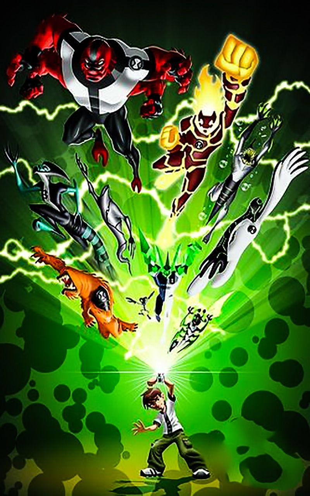

NEW UPDATE'S
BEN 10 new series 2023 update

Here's my stance on the Ben 10 remake (it fits more of a remake than a reboot). Even with Man of Action involved, I don't think it's going to be a good show. Even if it does turn out to be a good show, I doubt that it'll be successful enough in merchandise sales for Cartoon Network to keep it on the air. After all, that is the real reason why Cartoon Network wants to make this show. It's the real reason why they made the PPG reboot. Just to sell more Ben 10 toys. I heard from RebelTaxi's podcast a while back how Ultimate Alien's toy sales were so poor that barely anyone bought and sold any Omniverse toys. If that's really the case, then what makes Cartoon Network think that the toy line for this next Ben 10 show will do any good in sales if barely anyone is interested in them and barely any retail stores wanted to sell any more Ben 10 toys. Considering the poor treatment that Cartoon Network gives to many of their shows, including Omniverse, as a result of low toy sales, my guess is that this next Ben 10 show would most likely last one or two seasons before Cartoon Network cancels it if the toy sales don't do well enough. I've noticed on the internet that barely anyone has any interest in this next Ben 10 show and the lack of information that they've been putting out only makes things more frustrating and further reduces people's interests. There's just too many factors that work against this next show than work in favor of it and more factors working against it are just being further added in as time goes by. I really think that Cartoon Network has set themselves up for failure here with this next show.
Here's another thing about kids. Cartoon Network claims that this next Ben 10 show is being made to introduce the new generation of kids to Ben 10 but they already got introduced to this series...through Omniverse and I bet people anything that most of the new generation also went back and watched the previous shows. Even then, if that's really what Cartoon Network wants to do, then they've could have simply and more successfully done that through airing a marathon of the previous Ben 10 shows.
Here's another thing that I have here. I have a feeling that Cartoon Network is going to really modernize this very show; especially since that they've done that with the PPG reboot. There was also a line in the leaked artwork where Ben talks about wanting to binge watch Sumo Slammers. RebelTaxi makes a really good point in his PPG reboot review. The more you modernize a show, the faster and more outdated it becomes. Shows such as the PPG and the original Ben 10 don't focus on modern day trends and as a result of that and their great quality, they become more timeless. I really hope that they don't end up modernizing this show but these are CN executives, that have put themselves in charge of this next show, that I'm referring to here.